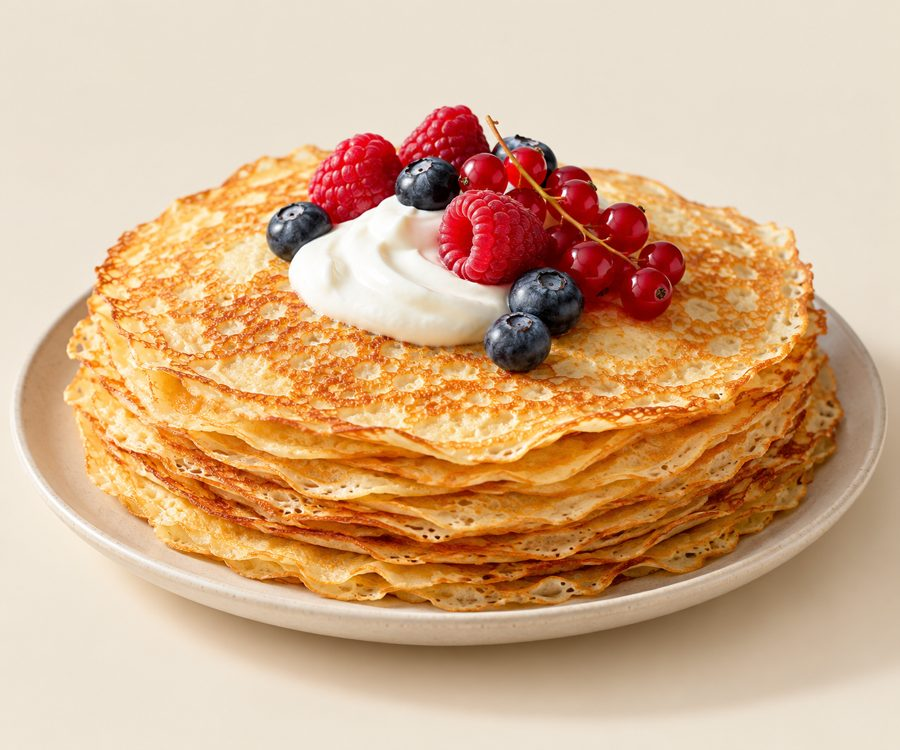

Рецепт 1 · Завтраки
Кефирные блины из цельнозерновой муки
Что заменили
- пшеничная мука высшего сорта → цельнозерновая мука
- молоко → кефир
Ингредиенты
- Цельнозерновая мука 1 стакан
- Кефир 1 стакан
- Яйца 2 шт.
- Растительное масло 1 ст. л.
- Сахар 1 ч. л.
- Разрыхлитель или сода ½ ч. л.
- Соль щепотка
Как готовить
- Смешать муку, сахар, разрыхлитель и соль.
- Отдельно взбить яйца, добавить кефир и масло.
- Постепенно влить жидкую смесь в сухую, мешая, чтобы не было комков.
- Дать тесту постоять 10-15 минут.
- Печь на разогретой сковороде на среднем огне, подавать тёплыми.